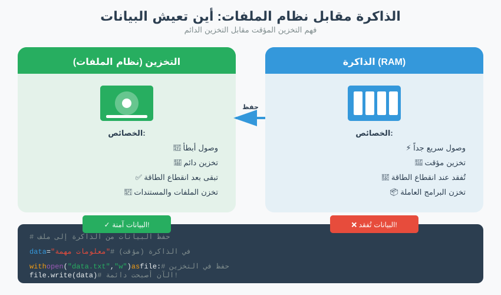

ما سنغطيه
- تتبّع البيانات — لماذا يأتي الموقع والعمر قبل التحليل
- التوليد والموقع — مجموعات المصادر الأربع، مع أمثلة ملموسة
- دورة حياة البيانات — الفائض، والسجلات الدفترية، والذواكر المؤقتة، والنسخ الاحتياطية؛ الحذف ليس تدميرًا
- ترتيب التطاير — RFC 3227، الاستحواذ الحي مقابل الميت (النشاط 1)
- الطبقات الأربع للملكية — المضيف، الشبكة، مزوّد الخدمة/الاتصالات، السحابة (النشاط 2)
- الحصول على البيانات من أطراف أخرى — المسارات، الاحتفاظ مقابل المهلة
- الخلاصة والجسر إلى الجزء الثالث
تتبّع البيانات
كل فعل رقمي يترك آثارًا في أكثر من مكان. رسالة واحدة تُرسَل من هاتف تكون موجودة، ولو لفترة وجيزة، في ذاكرة الهاتف، وفي مخزّنه، وعلى شبكات الخلوي وWi-Fi التي عبرتها، وفي خوادم مزوّد خدمة المراسلة، وربما في نسخة احتياطية سحابية. لكلّ نسخة مالك مختلف، وعمر مختلف، ومسار قانوني مختلف للوصول إليها. مهمّة المحقّق الأولى ليست التحليل — بل رسم خريطة أين توجد البيانات وكم ستدوم.
هذا الترتيب متعمَّد، وهو العمود الفقري للجلسة بأكملها. في الجزء الأول قلنا إنّ البيانات الجنائية الرقمية تحمل قيودًا — الاستحواذ القانوني، والسلامة، والمقبولية. هنا نجعل تلك القيود ملموسة بطرح السؤال الأكثر مادّية يمكن تخيّله: أين، بالضبط، تقع البايتات؟ الجواب لا يكاد يكون أبدًا "في مكان واحد". إنّه تشتّت من النسخ عبر أجهزة تحوزها، وشبكات لا تحوزها، وخوادم في ولايات قضائية قد لا تزورها أبدًا. تعامل مع القضية كخريطة قبل أن تتعامل معها كأحجية.
تخيّل أثر قدم على ثلاثة أسطح: رمل مبلّل عند خطّ المدّ، ورمل جافّ أعلى منه، وممرّ خرساني. الخطوة نفسها مسجّلة في الثلاثة جميعًا، لكنّ المدّ سيمحو أحدها خلال دقائق، والريح ستطمس آخر خلال ساعات، وقد يدوم الثالث سنوات. تتصرّف الأدلة الرقمية بالطريقة نفسها — وأنت تجمع نسخة الرمل المبلّل أولًا.
لذا فإنّ سؤالين يسريان عبر كلّ ما يلي، ويستحقّان أن يُكتبا على اللوح: كم ستدوم هذه النسخة؟ (سؤال التطاير) ومن يسيطر عليها، وبأيّ قانون؟ (سؤال الملكية). الأول يقرّر الترتيب الذي تتصرّف به؛ والثاني يقرّر الباب الذي عليك أن تمرّ عبره. معظم أخطاء المبتدئين تأتي من الإجابة عن أحدهما ونسيان الآخر — تصوير قرص بإتقان بينما تتبخّر الذاكرة المتطايرة التي احتجتها، أو ملاحقة حساب سحابي لشهور بينما كانت نسخة محلية في كيس أدلّة طوال الوقت.
للنقاش
اختر فعلًا روتينيًا — إرسال صورة إلى محادثة جماعية ليلة أمس في التاسعة مساءً. على وجه السرعة، في كم مكان متمايز يوجد الآن أثر لذلك الفعل الواحد؟ قارنوا الأعداد في الغرفة. معظم الناس يقدّرون أقلّ من الحقيقة؛ والفجوة بين تخمينهم الأول والعدد الحقيقي هي بالضبط الحدس الذي يحاول هذا الجزء بناءه.
أين تُولّد البيانات وتُخزَّن
تُولّد البيانات الجنائية الرقمية في كلّ مكان تقريبًا يلامس فيه جهاز أو خدمة نشاط شخص ما. ومن المفيد تجميع المصادر بحسب من يولّدها — لأنّ المولِّد عادةً ما يكون أيضًا الحائز، والحائز، كما سنرى، هو من عليك أن تقترب منه قانونيًا. وتأتي كلّ مجموعة أدناه مع مثال ملموس واحد كي تبقى الفكرة المجرّدة راسخة:
- أجهزة المستخدم الخاصّة — الهواتف، والحواسيب المحمولة، والأجهزة القابلة للارتداء، والمركبات، ومستشعرات إنترنت الأشياء (IoT). غنيّة وشخصية وعادةً أول ما يُضبط. مثال: ساعة لياقة تسجّل ارتفاعًا مفاجئًا في معدّل ضربات القلب ومسارًا للموقع (GPS) يضع مرتديها في موقع عند 9:04 مساءً.
- المؤسّسات التي يتعامل معها المستخدم — أصحاب العمل، والمصارف، والمستشفيات، والمدارس. تولّد سجلات عن المستخدم كناتج جانبي لتقديم خدمة. مثال: سجلّ معاملات مصرف يُظهر دفعة ببطاقة عند محطة وقود قبل دقيقتين من نقطة الموقع تلك.
- مزوّدو الخدمات والبنية التحتية — مزوّدو خدمة الإنترنت (ISP)، وشركات الاتصالات، وشركات الاستضافة والسحابة. يرون الاتصالات، والبيانات الوصفية لحركة المرور، والمحتوى المخزَّن. مثال: سجلات مشغّل اتصالات محمول تُظهر أيّ برج خلوي كان الهاتف متّصلًا به خلال النافذة الزمنية نفسها.
- المنصّات التجارية — وسائل التواصل الاجتماعي، والتجارة الإلكترونية، وشبكات الإعلانات. غالبًا ما تكون أكبر السجلات السلوكية وأكثرها تفصيلًا الموجودة عن شخص. مثال: تطبيق تواصل اجتماعي يحوز الرسالة نفسها، وطوابعها الزمنية للتسليم، وبصمة الجهاز الذي أرسلها.

لاحظ أنّ معظم هذه البيانات يحوزها شخص غير الشخص الذي تصفه. تلك الحقيقة المنفردة — الملكية مع الحائز لا مع الموضوع — تحرّك كلّ شيء في بقية هذا الجزء. ولاحظ أيضًا كيف تؤيّد الأمثلة الأربعة أعلاه بعضها بعضًا: الساعة، والمصرف، والمشغّل، والتطبيق تثلّث بشكل مستقلّ الحدث نفسه عند التاسعة مساءً. مصادر متعدّدة ضعيفة تتّفق غالبًا ما تكون دليلًا أقوى من مصدر غنيّ واحد يقف منفردًا، لأنّ كلًّا منها ولّده طرف مختلف بلا دافع للتنسيق.
ملاحظة للمدرّب
لا تقضِ هنا أكثر من 20 دقيقة؛ فهذا تمرين رسم خريطة، لا فهرسة. النقطة الوحيدة التي يجب ترسيخها هي "الحائز نادرًا ما يكون الموضوع". وطريقة سريعة لاختبارها: اطلب من الغرفة أن يسمّي كلّ منهم، عن هاتفه الآن، سجلًّا واحدًا عنه يقيم على خادم لم يسجّل دخوله إليه قطّ. سيقول أحدهم سجلّ الموقع لدى المشغّل خلال ثوانٍ — ابنِ على ذلك.
دورة حياة البيانات
تمرّ البيانات عبر دورة حياة يمكن التنبؤ بها، ويمكن التقاط الأدلة — أو فقدانها — في أيّ مرحلة:
البصيرة الجنائية هي أنّ الحذف ليس تدميرًا. إزالة ملف عادةً ما تفكّ ارتباطه فقط؛ يضع نظام التشغيل علامة على مساحته بأنّها متاحة، لكنّ البايتات نفسها تبقى إلى أن يُكتب شيء آخر فوقها. وإلى أن يحدث ذلك الكتابة فوقها — وقد يكون ذلك ثوانٍ وقد يكون شهورًا — تكون البيانات قابلة للاستعادة بالكامل. كثير من علم الأدلة الجنائية هو استعادة بيانات ظنّ أحدهم أنّها زالت.
ومن المفيد معرفة أين تختبئ تلك النسخ الباقية، لأنّ كلًّا منها مكان سينظر فيه المحلّل ومكان ينسى الخصم أن يمحوه:
- المساحة الفائضة (slack space) — البقايا في نهاية عنقود القرص. إذا حلّ ملف بحجم 6 كيلوبايت في عنقود بحجم 8 كيلوبايت، فقد لا تزال الـ 2 كيلوبايت المتبقّية تحوي شظايا من أيّ شيء شغل ذلك العنقود من قبل. وحذف الملف الجديد لا يفعل شيئًا للشظية القديمة.
- السجلات الدفترية لنظام الملفات — تسجّل أنظمة الملفات الحديثة التغييرات المعلّقة في سجلّ دفتري كي تتمكّن من التعافي من انهيار. ويمكن لذلك السجلّ أن يحفظ أسماء وأحجام وطوابع زمنية لملفات أُزيلت منذئذٍ من الدليل الظاهر.
- الذواكر المؤقتة والنسخ المؤقتة — قواعد بيانات الصور المصغّرة، وذواكر المتصفّح المؤقتة، وملفات التطبيقات المؤقتة والمعاينات تحتفظ روتينيًا بنسختها الخاصّة من المحتوى. وغالبًا ما تبقى صورة "محذوفة" كصورة مصغّرة بعد زوال الأصل بمدة طويلة.
- النسخ الاحتياطية — أكثر أشكال الإحياء موثوقية على الإطلاق. ملف حُذف اليوم قد يقبع سليمًا في النسخة الاحتياطية السحابية أو المحلية للأسبوع الماضي، خارج متناول المشتبه به تمامًا ليحذفه.
يفرّغ مشتبه به سلّة المحذوفات، ويعيد تهيئة قرص USB، ويظنّ أنّ تصدير المحادثة قد زال. ونظام الملفات الظاهر نظيف فعلًا. لكنّ ذاكرة الصور المصغّرة المؤقتة لا تزال تحوي معاينة لمرفق الصورة، والسجلّ الدفتري لنظام الملفات لا يزال يدرج اسم الملف الأصلي ووقت حذفه، ونسخة احتياطية سحابية أُخذت في الليلة السابقة تحوي التصدير دون مساس. ثلاثة آثار متبقّية مستقلّة، لم يعرف المشتبه به أن يتعامل مع أيّ منها. "لقد حذفته" نادرًا ما تكون نهاية القصّة.
تشرح رؤية دورة الحياة أيضًا متى تكون الأدلة أقوى. البيانات في مرحلتي الإنشاء والتخزين طازجة وكاملة؛ وبمجرّد أن تبلغ الحذف، تكون في سباق مع الكتابة فوقها. هذا هو المنطق نفسه لترتيب التطاير — نحن ننظر إليه ببساطة من خلال حياة ملف واحد بدلًا من قابلية وسيط واحد للزوال. وكلاهما يشير الاتّجاه نفسه: كلّما بكّرت في الوصول إلى البيانات، حصلت على المزيد منها.
للنقاش
أين ستبحث أنت أولًا عن ملف يقسم مشتبه به أنّه دمّره — الجهاز الذي أمامك، أم مكان لم يسيطر عليه المشتبه به من الأساس؟ ماذا يخبرك جوابك عن مَن غالبًا ما يكون أكثر الشهود فائدة في قضية؟
ترتيب التطاير
بعض البيانات يتبخّر في ثوانٍ؛ وبعضها يستمرّ لسنوات. يرتّب ترتيب التطاير البيانات من الأكثر إلى الأقل عرضةً للزوال، ويعطي قاعدة الجمع المترتّبة عليه: التقط أكثر الأدلة تطايرًا أولًا، لأنّ الانتظار يدمّرها. هذا ليس فلكلورًا — بل توجيه مقنّن. RFC 3227، أي "إرشادات جمع الأدلة وأرشفتها" الصادرة عن IETF، تنصّ صراحةً على ترتيب التطاير وتطلب من المستجيبين الجمع من الأكثر تطايرًا إلى الأقل.
| الترتيب | البيانات | العمر المعتاد |
|---|---|---|
| 1 (الأكثر تطايرًا) | سجلّات المعالج (CPU registers)، الذاكرة المؤقتة | نانوثوانٍ |
| 2 | ذاكرة الوصول العشوائي (RAM): العمليات الجارية، اتصالات الشبكة المفتوحة، المفاتيح المفكوكة التشفير | حتى إيقاف الطاقة |
| 3 | حالة الشبكة، وجداول التوجيه وARP، وحركة المرور الحيّة | ثوانٍ إلى دقائق |
| 4 | القرص: الملفات، ملف المبادلة (swap)، المساحة غير المخصَّصة، الفائض | حتى يُكتب فوقها |
| 5 | السجلات البعيدة، سجلات المزوّد، الأرشيفات | أيام إلى سنوات (حسب سياسة الاحتفاظ) |
| 6 (الأقل تطايرًا) | النسخ الاحتياطية، المطبوعات، التهيئة المادية | سنوات |
يُسقَط هذا الجدول مباشرةً على قرار واحد ذي عواقب: الاستحواذ الحي مقابل الاستحواذ الميت. الاستحواذ الحي يلتقط نظامًا قيد التشغيل — وقبل كلّ شيء التقاط ذاكرة الـ RAM (الرتب 1–3) بينما لا تزال الآلة قيد التشغيل، محافظًا على العمليات الجارية، والاتصالات المفتوحة، والأهمّ من ذلك مفاتيح التشفير الموجودة فقط في الذاكرة. أمّا الاستحواذ الميت فهو صورة القرص الكلاسيكية (الرتبة 4): أوقف تشغيل الآلة، وصِل حاجز كتابة، وصوّر التخزين بِتًّا بِبتّ. الاستحواذ الميت أنظف وأسهل في الدفاع عنه أمام المحكمة — لكن يمكن أخذه في أيّ وقت لاحق، في حين أنّ الالتقاط الحي لا يمكن.

لماذا قد يدمّر نزع القابس أفضل الأدلة. التقاط الذاكرة الحيّة — المفاتيح المفكوكة التشفير، والعمليات الجارية، والمحادثات النشطة — لا يمكن إعادة أخذه لاحقًا. إذا كان القرص مشفّرًا والنسخة الوحيدة من المفتاح في الـ RAM، فإنّ قطع الطاقة يحوّل آلة قابلة للقراءة إلى قالب لا يمكن الوصول إليه. غريزة "نزع القابس لتصوير القرص بأمان" هي، في تلك الحالة، عكس الصواب تمامًا: تحافظ على أقلّ الطبقات قيمة وتمحو أثمنها في الغرفة. قرّر الحي مقابل الميت قبل أن تلمس زرّ الطاقة.
ملاحظة للمدرّب
هذا هو القلب المفاهيمي للجلسة — امنحه الـ 25 دقيقة كاملة وشغّل النشاط 1 بداخله. إذا كانت الغرفة غير تقنية، فثبّت فكرة الحي مقابل الميت بمثال مفتاح التشفير أعلاه؛ فهي ترسخ أسرع من أيّ تصنيف. قاوم الغوص في أدوات تصوير محدّدة (تلك أرض الجزء الرابع)؛ وأبقِ التركيز على الترتيب وعدم قابلية التراجع.
النشاط 1 — ابنِ خطة استحواذ مرتّبة بحسب التطاير (في أزواج)
تصل إلى مكتب. الحاسوب المحمول قيد التشغيل وغير مقفل، بقرص مشفّر، وتطبيق مراسلة مفتوح، واتصال VPN نشط. على المكتب يوجد هاتف (مقفل)، وقرص USB، وموجّه يومض تحت الشاشة. المستخدم غير موجود.
اكتب الترتيب الذي ستستحوذ به من كلّ مصدر، ودوّن لكلّ منها: هل هذا استحواذ حيّ أم ميت، وما الذي يُفقد إذا انتظرت؟ كن مستعدًّا للدفاع عن سبب مجيء ذاكرة الحاسوب المحمول قيد التشغيل قبل قرصه — وأيّ حركة خاطئة واحدة (تلميح: زرّ الطاقة) ستنهار معها الخطة بأكملها.
للنقاش
يخبرك الـ RFC أن تجمع الأكثر تطايرًا أولًا. لكنّ الاستحواذ الحي يغيّر النظام الجاري قليلًا بمجرّد ملاحظته، بينما الاستحواذ الميت نقيّ. كيف توازن بين "التقط أكثر، لكن المس النظام" و"التقط أقلّ، لكن ابقَ نظيفًا"؟ سيحوّل الجزء الثالث هذا التوتّر بالذات إلى مسألة مقبولية.
الطبقات الأربع للملكية
يحدّد المكان الذي تقع فيه البيانات فعليًا من يملكها وأيّ أداة قانونية تحتاجها للوصول إليها. ومن المفيد التفكير في أربع طبقات، تتّجه للخارج من جهاز المشتبه به نفسه إلى سحابة أجنبية. الجدول أدناه هو الملخّص؛ والأقسام الفرعية بعده تمرّ بكلّ طبقة مع مثال واقعي والأداة القانونية التي تفتحها.
| الطبقة | أمثلة | المالك المعتاد | المسار القانوني المعتاد |
|---|---|---|---|
| المضيف / المحلية | الهاتف، الحاسوب المحمول، USB، التخزين على الجهاز وذاكرة RAM | مالك الجهاز / المشتبه به | ضبط قانوني، أو مذكرة تفتيش، أو موافقة المالك |
| الشبكة | سجلات الموجّه، والجدار الناري، وأنظمة كشف التسلّل (IDS)، وشبكة Wi-Fi المؤسّسية، وNetFlow | المؤسّسة التي تُدير الشبكة | تفويض داخلي؛ مذكرة تفتيش للأطراف الثالثة |
| مزوّد الخدمة (ISP) / الاتصالات | هوية المشترك، سجلات تفاصيل المكالمات (CDR)، سجلات الاتصال والموقع | مزوّد خدمة الإنترنت / الاتصالات | أمر قضائي أو طلب مُجاز من الجهة المنظِّمة؛ قانون الاحتفاظ بالبيانات |
| السحابة / البعيدة | البريد الإلكتروني، وسائل التواصل الاجتماعي، البرمجيات كخدمة (SaaS)، تخزين الكائنات، النسخ الاحتياطية | مزوّد الخدمة السحابية (غالبًا في ولاية قضائية أخرى) | إجراء قانوني لدى المزوّد؛ معاهدة المساعدة القانونية المتبادلة (MLAT) العابرة للحدود حين تكون البيانات في الخارج |
المضيف / المحلية — الجهاز في يدك
الطبقة الأعمق هي عتاد المشتبه به نفسه: الهاتف المضبوط، والحاسوب المحمول، وقرص USB، والتخزين على الجهاز والـ RAM. مثال: قاعدة البيانات المحلية لتطبيق المراسلة على هاتف مضبوط لا تزال تحوي رسالة التاسعة مساءً، وإيصالات قراءتها، والصور المصغّرة لمرفقاتها. هذه هي الطبقة التي تسيطر عليها مباشرةً أكثر من غيرها — فبمجرّد أن تضبط الجهاز قانونيًا، يمكنك تصويره وفق جدولك الزمني الخاصّ. والأداة القانونية هي ضبط قانوني، أو مذكرة تفتيش تشمل الجهاز، أو موافقة المالك. والعقبة هي الوصول لا القانون: فالتشفير والشاشات المقفلة قد يضعان بيانات تملكها قانونيًا خارج المتناول التقني.
الشبكة — المؤسّسة في الوسط
خطوة للخارج هي الشبكة التي عبرها النشاط: الموجّهات، والجدران النارية، وسجلات كشف التسلّل، وسجلات ارتباط Wi-Fi المؤسّسية، وNetFlow. مثال: متحكّم Wi-Fi الشركة يسجّل أنّ هاتف المشتبه به ارتبط بنقطة وصول المكتب من 8:50 إلى 9:15 مساءً، واضعًا الجهاز في المبنى أثناء الرسالة. والمالك هو المؤسّسة التي تُدير الشبكة، لذا فإنّ الأداة القانونية هي تفويض داخلي حين تكون مؤسّستك أنت، أو مذكرة تفتيش حين تعود الشبكة إلى طرف ثالث. وغالبًا ما تكون هذه السجلات قصيرة العمر — تُدوَّر خلال أيام — لذا فهي تنتمي إلى أعلى قائمة استحواذك.
مزوّد الخدمة / الاتصالات — المشغّل الذي لا تستطيع رؤية ما بداخله
أبعد من ذلك يقع مزوّدو الإنترنت والاتصالات: هوية المشترك، وسجلات تفاصيل المكالمات (CDR)، وسجلات الاتصال، وسجلات الموقع الخلوي. مثال: سجلات الـ CDR لمشغّل الاتصالات المحمول تُظهر الهاتف متّصلًا ببرج خلوي محدّد عند 9:04 مساءً، مؤيّدةً بشكل مستقلّ سجلّ الـ Wi-Fi. ليس لديك أيّ وصول مباشر هنا على الإطلاق. والأداة القانونية هي أمر قضائي أو طلب مُجاز من الجهة المنظِّمة، يستند غالبًا إلى قانون الاحتفاظ بالبيانات الذي يُلزم المشغّل بحفظ مثل هذه السجلات لمدة محدّدة. وتلك النافذة من الاحتفاظ منتهية، ولهذا فإنّ هذه الطبقة هي حيث تبدأ الساعة تدقّ ضدّك.
السحابة / البعيدة — البيانات في بلد آخر
الطبقة الأبعد هي السحابة: البريد الإلكتروني، ووسائل التواصل الاجتماعي، وتطبيقات البرمجيات كخدمة (SaaS)، وتخزين الكائنات، والنسخ الاحتياطية — وغالبًا ما تُستضاف في ولاية قضائية مختلفة عن تحقيقك. مثال: سلسلة الرسائل الكاملة، وطوابعها الزمنية للتسليم على جانب الخادم، ونسخة احتياطية متزامنة تقيم على خوادم مزوّد المراسلة في الخارج. والأداة القانونية هي الإجراء القانوني الخاصّ بالمزوّد نفسه، وحين تقع البيانات في الخارج، طلب MLAT (معاهدة المساعدة القانونية المتبادلة) العابر للحدود. هذا هو أبطأ الأبواب جميعًا، وأكثرها عرضةً لأن تُغلقه نافذة احتفاظ قبل أن تعبره.
كلّما اتّجهت للخارج أكثر، قلّت سيطرتك وزاد الإجراء الذي تحتاجه. القرص المحلي الذي ضبطته قانونيًا لك أن تصوّره الآن؛ أمّا سجلّ محادثة على سحابة أجنبية فقد يستغرق شهورًا من المساعدة القانونية المتبادلة للحصول عليه — وقد تكون نوافذ الاحتفاظ قد أُغلقت بحلول ذلك الوقت. الطبقات الأربع ليست مجرّد خريطة لأين تقيم البيانات؛ إنّها خريطة لمقدار الاحتكاك القائم بينك وبينها.
النشاط 2 — ارسم خريطة رسالة التاسعة مساءً عبر الطبقات الأربع (مجموعات صغيرة)
خذ المثال الجاري: رسالة واحدة أُرسلت عند التاسعة مساءً من هاتف مشتبه به. لِـ كلّ طبقة من طبقات الملكية الأربع، دوّن (أ) أثرًا ملموسًا واحدًا يحمل دليلًا على تلك الرسالة، و(ب) من يملكه، و(ج) الأداة القانونية التي ستحتاجها للحصول عليه.
ثم رتّب مدخلاتك الأربعة بحسب سرعة اختفاء كلّ منها. أين يتعارض ترتيب التطاير وترتيب الملكية — أي أين يكون الدليل الأكثر عرضةً للزوال هو أيضًا الأصعب وصولًا قانونيًا؟ ذلك الصدام هو مشكلة التخطيط التي يدور حولها القسم التالي.
الحصول على البيانات من أطراف أخرى
لأنّ معظم البيانات يحوزها شخص غير الموضوع، فإنّ كثيرًا من الممارسة الجنائية الرقمية هو الاستحواذ من أطراف ثالثة — المواقع التجارية، والمؤسّسات، والحكومات. المسارات المشروعة، من الأخفّ إلى الأثقل، تقريبًا هي:
- المصادر المفتوحة / المنشورة — أيّ شيء عامّ قانونيًا. سيناريو: منشور علني على وسائل التواصل لمشتبه به يضع طابعًا زمنيًا يثبت وجوده في مكان ما. رخيص وسريع، لكن تحقّق من مصدريّته قبل الاعتماد عليه.
- موافقة الموضوع — يمنح صاحب البيانات الوصول. سيناريو: تسلّم ضحية طوعًا تصدير حسابها الخاصّ المحتوي على الرسائل التهديدية. نظيف، لكنّه محدود بالأطراف الراغبة.
- طلب من المزوّد وفق شروطه — تنشر منصّات كثيرة إجراءً لإنفاذ القانون أو لطلب البيانات. سيناريو: تقدّم طلب حفظ وإفصاح عبر بوابة إنفاذ القانون لمنصّة؛ فلا تطلق إلّا ما تسمح به سياستها والقانون.
- أمر قضائي / مذكرة تفتيش — يُلزم بالإفصاح عن المحتوى أو السجلات المخزَّنة التي لن يطلقها المزوّد طوعًا. سيناريو: يأمر قاضٍ مزوّد بريد إلكتروني بتسليم محتويات حساب مسمّى.
- القنوات التنظيمية وقانون الاحتفاظ بالبيانات — غالبًا ما تُلزَم شركات الاتصالات ومزوّدو الإنترنت بالاحتفاظ بسجلات معيّنة والإفصاح عنها عبر طلب مُجاز. سيناريو: يُنتج مشغّل سجلات موقع خلوي كان مُلزَمًا قانونيًا بالاحتفاظ بها.
- المساعدة القانونية المتبادلة (MLAT) — الآلية العابرة للحدود المستخدمة حين تكون البيانات، أو الشركة، في بلد آخر. سيناريو: تطلب سلطتك من حكومة أجنبية أن تُلزم مزوّدًا سحابيًا مقرّه في الخارج بالإفصاح عن حساب.
الوقت هو العدوّ. لكلّ مسار مهلة، ونوافذ الاحتفاظ محدودة. وهما يسيران في اتّجاهين متعاكسين: كلّما ثقُل المسار القانوني، طال زمنه — ومع ذلك فإنّ البيانات التي يبلغها غالبًا ما تُحفظ بموجب سياسة احتفاظ تعدّ تنازليًا بالفعل.
نافذة الاحتفاظ
افترض أنّ مزوّدًا يحتفظ بسجلات الاتصال لمدة 90 يومًا. من لحظة إنشاء السجلّ، لديك على الأكثر ثلاثة أشهر قبل أن يُمحى وفق الجدول. يفرغ الرفّ سواء وصلت أوراقك أم لا.
المهلة
افترض الآن أنّ المسار القانوني الوحيد إلى ذلك السجلّ هو طلب MLAT يستغرق 6 أشهر. أجرِ الحساب: يصل الطلب بعد أربعة أشهر من حذف السجلّ بالفعل. اتّبعت كلّ قاعدة وبلغت رفًّا فارغًا مع ذلك.
الدفاع العملي ضدّ هذا الحساب هو طلب الحفظ — إشعار سريع خفيف يطلب من الحائز تجميد السجلات ذات الصلة بينما يلحق الإجراء القانوني الأبطأ. إنّه لا يمنحك البيانات؛ بل يوقف الساعة. ومعرفة أيّ الحائزين سيحترم طلب حفظ، وإرساله في اليوم الأول، غالبًا ما يكون ما يفصل قضية قابلة للاستعادة عن قضية ضائعة. درس هذا الجزء بأكمله، مضغوطًا: حدّد النسخ المتطايرة والبعيدة أولًا، وجمّدها قبل أن تتمكّن من قراءتها.
للنقاش
بالنظر إلى صدام الـ 90 يومًا مقابل الـ 6 أشهر أعلاه، ماذا كان يمكنك أن تفعل في اليوم الأول كي تظلّ تملك الدليل بحلول وقت تمام الـ MLAT؟ امشِ على الخطّ الزمني للخلف من "البيانات في اليد" وجِد آخر لحظة كان على كلّ خطوة أن تبدأ فيها. يتناول الجزء الثالث السؤال المقابل: حتى حين تستطيع الحصول على البيانات بهذه الطريقة، ماذا يجوز لك قانونيًا أن تفعل بها، وهل ستكون مقبولة كدليل؟
جرّبه: عرض التحقيق ذو الخطوات الست يمشي بقضية واحدة من التعرّف إلى العرض أمام المحكمة. شاهد الخطوات المبكّرة على وجه الخصوص — التعرّف على المصادر وحفظها — ولاحظ كم من القضية يُحسَم قبل أن يبدأ أيّ تحليل، بحسب ما إذا كانت النسخ الصحيحة قد جُمِّدت في الوقت المناسب.
الخلاصة ومزيد من التدريب
- كلّ فعل يترك آثارًا في عدّة أماكن في آنٍ واحد، لكلّ منها مالك وعمر مختلفان.
- تُولَّد البيانات من أربع مجموعات مصادر — أجهزة المستخدم، والمؤسّسات، والمزوّدون، والمنصّات التجارية — والحائز نادرًا ما يكون الموضوع.
- الحذف ليس تدميرًا — المساحة الفائضة، والسجلات الدفترية، والذواكر المؤقتة، والنسخ الاحتياطية تحتفظ بآثار متبقّية حتى يُكتب فوقها.
- ترتيب التطاير (RFC 3227) يملي ترتيب الجمع: الأكثر عرضةً للزوال أولًا. وهو يفرض خيار الاستحواذ الحي مقابل الميت — ونزع القابس قد يمحو أفضل الأدلة.
- الطبقات الأربع للملكية (المضيف، الشبكة، مزوّد الخدمة/الاتصالات، السحابة) تربط كلّ مصدر بمالك ومسار قانوني؛ ويزداد الاحتكاك كلّما اتّجهت للخارج أكثر.
- الحصول على بيانات الأطراف الثالثة يتراوح من المصادر المفتوحة إلى MLAT؛ ونوافذ الاحتفاظ مقابل المهل تجعل التوقيت حاسمًا، وطلب الحفظ يوقف الساعة.
ملاحظة للمدرّب — إدارة الساعتين
النشاطان والمطالبات النقاشية الثلاث هي العمود الفقري للإيقاع. إذا ضاق بك الوقت، فأبقِ النشاط 1 (خطة الاستحواذ) وحساب الاحتفاظ مقابل المهلة، وقلّص الأقسام الفرعية لكلّ طبقة إلى الجدول زائد الطبقتين الأبعد. الخلاصة المتعمَّدة التي تريدها في الغرفة بحلول النهاية هي اقتران التطاير (تصرّف بالترتيب الصحيح) بـالملكية (اطرق الباب الصحيح، مبكّرًا) — اختبرها بطرح سؤال النقاش الختامي والإصغاء إلى ما إذا كان الناس يلجؤون إلى طلب الحفظ دون مطالبة.
مزيد من التدريب قبل الجزء الثالث: خذ قطعة الدليل الواحدة التي رسمت خريطتها في نهاية الجزء الأول وضعها الآن في نموذج الطبقات الأربع — أين تقيم فعليًا، ومن يملكها، وما الذي سيتعيّن عليك فعله، وبأيّ سرعة، للحصول عليها قبل أن تنتهي صلاحيتها؟ احمل ذلك المثال إلى الجزء الثالث، حيث ينتقل السؤال من هل تستطيع الحصول عليها إلى هل يجوز لك استخدامها.